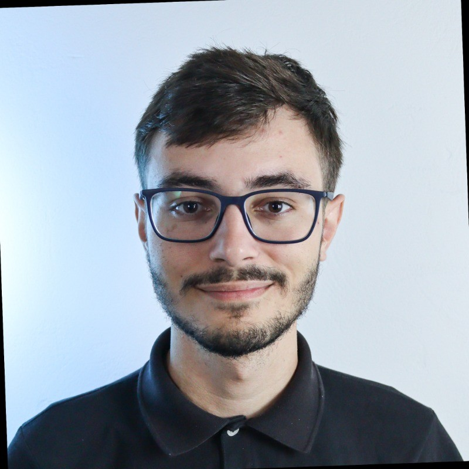

Sobre
Olá, eu sou Nicolas Frezza

Tenho 19 anos, resido na cidade de Criciúma-SC e sou um entusiasta de tecnologia desde que me conheço por gente. Desde então, tenho me dedicado a aprender e aprimorar minhas habilidades em diversas linguagens de programação e frameworks.
Habilidades:


Atualmente, atuo na área de Suporte como estagiário na empresa Betha Sistemas.
Em minha vida pessoal, gosto de passar meu tempo livre lendo e aprecio jogos dos gêneros terror e RPG. Acredito que o equilíbrio entre trabalho e vida pessoal é essencial para manter a criatividade e a produtividade.
Se quiser saber mais sobre mim ou entrar em contato, sinta-se à vontade para visitar minhas redes sociais: